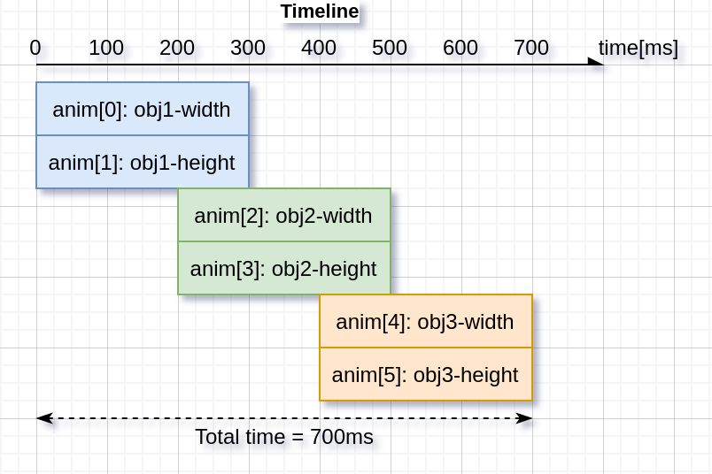

Animations
You can automatically change the value of a variable between a start and an end value using animations. Animation will happen by periodically calling an "animator" function with the corresponding value parameter.
The animator functions have the following prototype:
void func(void * var, lv_anim_var_t value);
This prototype is compatible with the majority of the property set functions in LVGL. For example lv_obj_set_x(obj, value) or lv_obj_set_width(obj, value)
Create an animation
To create an animation an lv_anim_t variable has to be initialized and configured with lv_anim_set_...() functions.
/* INITIALIZE AN ANIMATION
*-----------------------*/
lv_anim_t a;
lv_anim_init(&a);
/* MANDATORY SETTINGS
*------------------*/
/*Set the "animator" function*/
lv_anim_set_exec_cb(&a, (lv_anim_exec_xcb_t) lv_obj_set_x);
/*Set target of the animation*/
lv_anim_set_var(&a, obj);
/*Length of the animation [ms]*/
lv_anim_set_time(&a, duration);
/*Set start and end values. E.g. 0, 150*/
lv_anim_set_values(&a, start, end);
/* OPTIONAL SETTINGS
*------------------*/
/*Time to wait before starting the animation [ms]*/
lv_anim_set_delay(&a, delay);
/*Set path (curve). Default is linear*/
lv_anim_set_path(&a, lv_anim_path_ease_in);
/*Set a callback to indicate when the animation is ready (idle).*/
lv_anim_set_ready_cb(&a, ready_cb);
/*Set a callback to indicate when the animation is started (after delay).*/
lv_anim_set_start_cb(&a, start_cb);
/*When ready, play the animation backward with this duration. Default is 0 (disabled) [ms]*/
lv_anim_set_playback_time(&a, time);
/*Delay before playback. Default is 0 (disabled) [ms]*/
lv_anim_set_playback_delay(&a, delay);
/*Number of repetitions. Default is 1. LV_ANIM_REPEAT_INFINITE for infinite repetition*/
lv_anim_set_repeat_count(&a, cnt);
/*Delay before repeat. Default is 0 (disabled) [ms]*/
lv_anim_set_repeat_delay(&a, delay);
/*true (default): apply the start value immediately, false: apply start value after delay when the anim. really starts. */
lv_anim_set_early_apply(&a, true/false);
/* START THE ANIMATION
*------------------*/
lv_anim_start(&a); /*Start the animation*/
You can apply multiple different animations on the same variable at the same time.
For example, animate the x and y coordinates with lv_obj_set_x and lv_obj_set_y. However, only one animation can exist with a given variable and function pair and lv_anim_start() will remove any existing animations for such a pair.
Animation path
You can control the path of an animation. The most simple case is linear, meaning the current value between start and end is changed with fixed steps. A path is a function which calculates the next value to set based on the current state of the animation. Currently, there are the following built-in path functions:
lv_anim_path_linearlinear animationlv_anim_path_stepchange in one step at the endlv_anim_path_ease_inslow at the beginninglv_anim_path_ease_outslow at the endlv_anim_path_ease_in_outslow at the beginning and endlv_anim_path_overshootovershoot the end valuelv_anim_path_bouncebounce back a little from the end value (like hitting a wall)
Speed vs time
By default, you set the animation time directly. But in some cases, setting the animation speed is more practical.
The lv_anim_speed_to_time(speed, start, end) function calculates the required time in milliseconds to reach the end value from a start value with the given speed.
The speed is interpreted in unit/sec dimension. For example, lv_anim_speed_to_time(20,0,100) will yield 5000 milliseconds. For example, in the case of lv_obj_set_x unit is pixels so 20 means 20 px/sec speed.
Delete animations
You can delete an animation with lv_anim_del(var, func) if you provide the animated variable and its animator function.
Timeline
A timeline is a collection of multiple animations which makes it easy to create complex composite animations.
Firstly, create an animation element but dont call lv_anim_start().
Secondly, create an animation timeline object by calling lv_anim_timeline_create().
Thirdly, add animation elements to the animation timeline by calling lv_anim_timeline_add(at, start_time, &a). start_time is the start time of the animation on the timeline. Note that start_time will override the value of delay.
Finally, call lv_anim_timeline_start(at) to start the animation timeline.
It supports forward and backward playback of the entire animation group, using lv_anim_timeline_set_reverse(at, reverse).
Call lv_anim_timeline_stop(at) to stop the animation timeline.
Call lv_anim_timeline_set_progress(at, progress) function to set the state of the object corresponding to the progress of the timeline.
Call lv_anim_timeline_get_playtime(at) function to get the total duration of the entire animation timeline.
Call lv_anim_timeline_get_reverse(at) function to get whether to reverse the animation timeline.
Call lv_anim_timeline_del(at) function to delete the animation timeline.

Examples
Start animation on an event
C code
GitHub#include "../lv_examples.h"
#if LV_BUILD_EXAMPLES && LV_USE_SWITCH
static void anim_x_cb(void * var, int32_t v)
{
lv_obj_set_x(var, v);
}
static void sw_event_cb(lv_event_t * e)
{
lv_obj_t * sw = lv_event_get_target(e);
lv_obj_t * label = lv_event_get_user_data(e);
if(lv_obj_has_state(sw, LV_STATE_CHECKED)) {
lv_anim_t a;
lv_anim_init(&a);
lv_anim_set_var(&a, label);
lv_anim_set_values(&a, lv_obj_get_x(label), 100);
lv_anim_set_time(&a, 500);
lv_anim_set_exec_cb(&a, anim_x_cb);
lv_anim_set_path_cb(&a, lv_anim_path_overshoot);
lv_anim_start(&a);
} else {
lv_anim_t a;
lv_anim_init(&a);
lv_anim_set_var(&a, label);
lv_anim_set_values(&a, lv_obj_get_x(label), -lv_obj_get_width(label));
lv_anim_set_time(&a, 500);
lv_anim_set_exec_cb(&a, anim_x_cb);
lv_anim_set_path_cb(&a, lv_anim_path_ease_in);
lv_anim_start(&a);
}
}
/**
* Start animation on an event
*/
void lv_example_anim_1(void)
{
lv_obj_t * label = lv_label_create(lv_scr_act());
lv_label_set_text(label, "Hello animations!");
lv_obj_set_pos(label, 100, 10);
lv_obj_t * sw = lv_switch_create(lv_scr_act());
lv_obj_center(sw);
lv_obj_add_state(sw, LV_STATE_CHECKED);
lv_obj_add_event_cb(sw, sw_event_cb, LV_EVENT_VALUE_CHANGED, label);
}
#endif
def anim_x_cb(label, v):
label.set_x(v)
def sw_event_cb(e,label):
sw = e.get_target()
if sw.has_state(lv.STATE.CHECKED):
a = lv.anim_t()
a.init()
a.set_var(label)
a.set_values(label.get_x(), 100)
a.set_time(500)
a.set_path_cb(lv.anim_t.path_overshoot)
a.set_custom_exec_cb(lambda a,val: anim_x_cb(label,val))
lv.anim_t.start(a)
else:
a = lv.anim_t()
a.init()
a.set_var(label)
a.set_values(label.get_x(), -label.get_width())
a.set_time(500)
a.set_path_cb(lv.anim_t.path_ease_in)
a.set_custom_exec_cb(lambda a,val: anim_x_cb(label,val))
lv.anim_t.start(a)
#
# Start animation on an event
#
label = lv.label(lv.scr_act())
label.set_text("Hello animations!")
label.set_pos(100, 10)
sw = lv.switch(lv.scr_act())
sw.center()
sw.add_state(lv.STATE.CHECKED)
sw.add_event_cb(lambda e: sw_event_cb(e,label), lv.EVENT.VALUE_CHANGED, None)
Playback animation
C code
GitHub#include "../lv_examples.h"
#if LV_BUILD_EXAMPLES && LV_USE_SWITCH
static void anim_x_cb(void * var, int32_t v)
{
lv_obj_set_x(var, v);
}
static void anim_size_cb(void * var, int32_t v)
{
lv_obj_set_size(var, v, v);
}
/**
* Create a playback animation
*/
void lv_example_anim_2(void)
{
lv_obj_t * obj = lv_obj_create(lv_scr_act());
lv_obj_set_style_bg_color(obj, lv_palette_main(LV_PALETTE_RED), 0);
lv_obj_set_style_radius(obj, LV_RADIUS_CIRCLE, 0);
lv_obj_align(obj, LV_ALIGN_LEFT_MID, 10, 0);
lv_anim_t a;
lv_anim_init(&a);
lv_anim_set_var(&a, obj);
lv_anim_set_values(&a, 10, 50);
lv_anim_set_time(&a, 1000);
lv_anim_set_playback_delay(&a, 100);
lv_anim_set_playback_time(&a, 300);
lv_anim_set_repeat_delay(&a, 500);
lv_anim_set_repeat_count(&a, LV_ANIM_REPEAT_INFINITE);
lv_anim_set_path_cb(&a, lv_anim_path_ease_in_out);
lv_anim_set_exec_cb(&a, anim_size_cb);
lv_anim_start(&a);
lv_anim_set_exec_cb(&a, anim_x_cb);
lv_anim_set_values(&a, 10, 240);
lv_anim_start(&a);
}
#endif
def anim_x_cb(obj, v):
obj.set_x(v)
def anim_size_cb(obj, v):
obj.set_size(v, v)
#
# Create a playback animation
#
obj = lv.obj(lv.scr_act())
obj.set_style_bg_color(lv.palette_main(lv.PALETTE.RED), 0)
obj.set_style_radius(lv.RADIUS.CIRCLE, 0)
obj.align(lv.ALIGN.LEFT_MID, 10, 0)
a1 = lv.anim_t()
a1.init()
a1.set_var(obj)
a1.set_values(10, 50)
a1.set_time(1000)
a1.set_playback_delay(100)
a1.set_playback_time(300)
a1.set_repeat_delay(500)
a1.set_repeat_count(lv.ANIM_REPEAT.INFINITE)
a1.set_path_cb(lv.anim_t.path_ease_in_out)
a1.set_custom_exec_cb(lambda a1,val: anim_size_cb(obj,val))
lv.anim_t.start(a1)
a2 = lv.anim_t()
a2.init()
a2.set_var(obj)
a2.set_values(10, 240)
a2.set_time(1000)
a2.set_playback_delay(100)
a2.set_playback_time(300)
a2.set_repeat_delay(500)
a2.set_repeat_count(lv.ANIM_REPEAT.INFINITE)
a2.set_path_cb(lv.anim_t.path_ease_in_out)
a2.set_custom_exec_cb(lambda a1,val: anim_x_cb(obj,val))
lv.anim_t.start(a2)
Animation timeline
C code
GitHub#include "../lv_examples.h"
#if LV_USE_FLEX && LV_BUILD_EXAMPLES
static lv_anim_timeline_t * anim_timeline = NULL;
static lv_obj_t * obj1 = NULL;
static lv_obj_t * obj2 = NULL;
static lv_obj_t * obj3 = NULL;
static const lv_coord_t obj_width = 90;
static const lv_coord_t obj_height = 70;
static void set_width(void * var, int32_t v)
{
lv_obj_set_width((lv_obj_t *)var, v);
}
static void set_height(void * var, int32_t v)
{
lv_obj_set_height((lv_obj_t *)var, v);
}
static void anim_timeline_create(void)
{
/* obj1 */
lv_anim_t a1;
lv_anim_init(&a1);
lv_anim_set_var(&a1, obj1);
lv_anim_set_values(&a1, 0, obj_width);
lv_anim_set_early_apply(&a1, false);
lv_anim_set_exec_cb(&a1, (lv_anim_exec_xcb_t)set_width);
lv_anim_set_path_cb(&a1, lv_anim_path_overshoot);
lv_anim_set_time(&a1, 300);
lv_anim_t a2;
lv_anim_init(&a2);
lv_anim_set_var(&a2, obj1);
lv_anim_set_values(&a2, 0, obj_height);
lv_anim_set_early_apply(&a2, false);
lv_anim_set_exec_cb(&a2, (lv_anim_exec_xcb_t)set_height);
lv_anim_set_path_cb(&a2, lv_anim_path_ease_out);
lv_anim_set_time(&a2, 300);
/* obj2 */
lv_anim_t a3;
lv_anim_init(&a3);
lv_anim_set_var(&a3, obj2);
lv_anim_set_values(&a3, 0, obj_width);
lv_anim_set_early_apply(&a3, false);
lv_anim_set_exec_cb(&a3, (lv_anim_exec_xcb_t)set_width);
lv_anim_set_path_cb(&a3, lv_anim_path_overshoot);
lv_anim_set_time(&a3, 300);
lv_anim_t a4;
lv_anim_init(&a4);
lv_anim_set_var(&a4, obj2);
lv_anim_set_values(&a4, 0, obj_height);
lv_anim_set_early_apply(&a4, false);
lv_anim_set_exec_cb(&a4, (lv_anim_exec_xcb_t)set_height);
lv_anim_set_path_cb(&a4, lv_anim_path_ease_out);
lv_anim_set_time(&a4, 300);
/* obj3 */
lv_anim_t a5;
lv_anim_init(&a5);
lv_anim_set_var(&a5, obj3);
lv_anim_set_values(&a5, 0, obj_width);
lv_anim_set_early_apply(&a5, false);
lv_anim_set_exec_cb(&a5, (lv_anim_exec_xcb_t)set_width);
lv_anim_set_path_cb(&a5, lv_anim_path_overshoot);
lv_anim_set_time(&a5, 300);
lv_anim_t a6;
lv_anim_init(&a6);
lv_anim_set_var(&a6, obj3);
lv_anim_set_values(&a6, 0, obj_height);
lv_anim_set_early_apply(&a6, false);
lv_anim_set_exec_cb(&a6, (lv_anim_exec_xcb_t)set_height);
lv_anim_set_path_cb(&a6, lv_anim_path_ease_out);
lv_anim_set_time(&a6, 300);
/* Create anim timeline */
anim_timeline = lv_anim_timeline_create();
lv_anim_timeline_add(anim_timeline, 0, &a1);
lv_anim_timeline_add(anim_timeline, 0, &a2);
lv_anim_timeline_add(anim_timeline, 200, &a3);
lv_anim_timeline_add(anim_timeline, 200, &a4);
lv_anim_timeline_add(anim_timeline, 400, &a5);
lv_anim_timeline_add(anim_timeline, 400, &a6);
}
static void btn_start_event_handler(lv_event_t * e)
{
lv_obj_t * btn = lv_event_get_target(e);
if (!anim_timeline) {
anim_timeline_create();
}
bool reverse = lv_obj_has_state(btn, LV_STATE_CHECKED);
lv_anim_timeline_set_reverse(anim_timeline, reverse);
lv_anim_timeline_start(anim_timeline);
}
static void btn_del_event_handler(lv_event_t * e)
{
LV_UNUSED(e);
if (anim_timeline) {
lv_anim_timeline_del(anim_timeline);
anim_timeline = NULL;
}
}
static void btn_stop_event_handler(lv_event_t * e)
{
LV_UNUSED(e);
if (anim_timeline) {
lv_anim_timeline_stop(anim_timeline);
}
}
static void slider_prg_event_handler(lv_event_t * e)
{
lv_obj_t * slider = lv_event_get_target(e);
if (!anim_timeline) {
anim_timeline_create();
}
int32_t progress = lv_slider_get_value(slider);
lv_anim_timeline_set_progress(anim_timeline, progress);
}
/**
* Create an animation timeline
*/
void lv_example_anim_timeline_1(void)
{
lv_obj_t * par = lv_scr_act();
lv_obj_set_flex_flow(par, LV_FLEX_FLOW_ROW);
lv_obj_set_flex_align(par, LV_FLEX_ALIGN_SPACE_AROUND, LV_FLEX_ALIGN_CENTER, LV_FLEX_ALIGN_CENTER);
/* create btn_start */
lv_obj_t * btn_start = lv_btn_create(par);
lv_obj_add_event_cb(btn_start, btn_start_event_handler, LV_EVENT_VALUE_CHANGED, NULL);
lv_obj_add_flag(btn_start, LV_OBJ_FLAG_IGNORE_LAYOUT);
lv_obj_add_flag(btn_start, LV_OBJ_FLAG_CHECKABLE);
lv_obj_align(btn_start, LV_ALIGN_TOP_MID, -100, 20);
lv_obj_t * label_start = lv_label_create(btn_start);
lv_label_set_text(label_start, "Start");
lv_obj_center(label_start);
/* create btn_del */
lv_obj_t * btn_del = lv_btn_create(par);
lv_obj_add_event_cb(btn_del, btn_del_event_handler, LV_EVENT_CLICKED, NULL);
lv_obj_add_flag(btn_del, LV_OBJ_FLAG_IGNORE_LAYOUT);
lv_obj_align(btn_del, LV_ALIGN_TOP_MID, 0, 20);
lv_obj_t * label_del = lv_label_create(btn_del);
lv_label_set_text(label_del, "Delete");
lv_obj_center(label_del);
/* create btn_stop */
lv_obj_t * btn_stop = lv_btn_create(par);
lv_obj_add_event_cb(btn_stop, btn_stop_event_handler, LV_EVENT_CLICKED, NULL);
lv_obj_add_flag(btn_stop, LV_OBJ_FLAG_IGNORE_LAYOUT);
lv_obj_align(btn_stop, LV_ALIGN_TOP_MID, 100, 20);
lv_obj_t * label_stop = lv_label_create(btn_stop);
lv_label_set_text(label_stop, "Stop");
lv_obj_center(label_stop);
/* create slider_prg */
lv_obj_t * slider_prg = lv_slider_create(par);
lv_obj_add_event_cb(slider_prg, slider_prg_event_handler, LV_EVENT_VALUE_CHANGED, NULL);
lv_obj_add_flag(slider_prg, LV_OBJ_FLAG_IGNORE_LAYOUT);
lv_obj_align(slider_prg, LV_ALIGN_BOTTOM_MID, 0, -20);
lv_slider_set_range(slider_prg, 0, 65535);
/* create 3 objects */
obj1 = lv_obj_create(par);
lv_obj_set_size(obj1, obj_width, obj_height);
obj2 = lv_obj_create(par);
lv_obj_set_size(obj2, obj_width, obj_height);
obj3 = lv_obj_create(par);
lv_obj_set_size(obj3, obj_width, obj_height);
}
#endif
class LV_ExampleAnimTimeline_1(object):
def __init__(self):
self.obj_width = 120
self.obj_height = 150
#
# Create an animation timeline
#
self.par = lv.scr_act()
self.par.set_flex_flow(lv.FLEX_FLOW.ROW)
self.par.set_flex_align(lv.FLEX_ALIGN.SPACE_AROUND, lv.FLEX_ALIGN.CENTER, lv.FLEX_ALIGN.CENTER)
self.btn_run = lv.btn(self.par)
self.btn_run.add_event_cb(self.btn_run_event_handler, lv.EVENT.VALUE_CHANGED, None)
self.btn_run.add_flag(lv.obj.FLAG.IGNORE_LAYOUT)
self.btn_run.add_flag(lv.obj.FLAG.CHECKABLE)
self.btn_run.align(lv.ALIGN.TOP_MID, -50, 20)
self.label_run = lv.label(self.btn_run)
self.label_run.set_text("Run")
self.label_run.center()
self.btn_del = lv.btn(self.par)
self.btn_del.add_event_cb(self.btn_del_event_handler, lv.EVENT.CLICKED, None)
self.btn_del.add_flag(lv.obj.FLAG.IGNORE_LAYOUT)
self.btn_del.align(lv.ALIGN.TOP_MID, 50, 20)
self.label_del = lv.label(self.btn_del)
self.label_del.set_text("Stop")
self.label_del.center()
self.slider = lv.slider(self.par)
self.slider.add_event_cb(self.slider_prg_event_handler, lv.EVENT.VALUE_CHANGED, None)
self.slider.add_flag(lv.obj.FLAG.IGNORE_LAYOUT)
self.slider.align(lv.ALIGN.BOTTOM_RIGHT, -20, -20)
self.slider.set_range(0, 65535)
self.obj1 = lv.obj(self.par)
self.obj1.set_size(self.obj_width, self.obj_height)
self.obj2 = lv.obj(self.par)
self.obj2.set_size(self.obj_width, self.obj_height)
self.obj3 = lv.obj(self.par)
self.obj3.set_size(self.obj_width, self.obj_height)
self.anim_timeline = None
def set_width(self,obj, v):
obj.set_width(v)
def set_height(self,obj, v):
obj.set_height(v)
def anim_timeline_create(self):
# obj1
self.a1 = lv.anim_t()
self.a1.init()
self.a1.set_values(0, self.obj_width)
self.a1.set_early_apply(False)
self.a1.set_custom_exec_cb(lambda a,v: self.set_width(self.obj1,v))
self.a1.set_path_cb(lv.anim_t.path_overshoot)
self.a1.set_time(300)
self.a2 = lv.anim_t()
self.a2.init()
self.a2.set_values(0, self.obj_height)
self.a2.set_early_apply(False)
self.a2.set_custom_exec_cb(lambda a,v: self.set_height(self.obj1,v))
self.a2.set_path_cb(lv.anim_t.path_ease_out)
self.a2.set_time(300)
# obj2
self.a3=lv.anim_t()
self.a3.init()
self.a3.set_values(0, self.obj_width)
self.a3.set_early_apply(False)
self.a3.set_custom_exec_cb(lambda a,v: self.set_width(self.obj2,v))
self.a3.set_path_cb(lv.anim_t.path_overshoot)
self.a3.set_time(300)
self.a4 = lv.anim_t()
self.a4.init()
self.a4.set_values(0, self.obj_height)
self.a4.set_early_apply(False)
self.a4.set_custom_exec_cb(lambda a,v: self.set_height(self.obj2,v))
self.a4.set_path_cb(lv.anim_t.path_ease_out)
self.a4.set_time(300)
# obj3
self.a5 = lv.anim_t()
self.a5.init()
self.a5.set_values(0, self.obj_width)
self.a5.set_early_apply(False)
self.a5.set_custom_exec_cb(lambda a,v: self.set_width(self.obj3,v))
self.a5.set_path_cb(lv.anim_t.path_overshoot)
self.a5.set_time(300)
self.a6 = lv.anim_t()
self.a6.init()
self.a6.set_values(0, self.obj_height)
self.a6.set_early_apply(False)
self.a6.set_custom_exec_cb(lambda a,v: self.set_height(self.obj3,v))
self.a6.set_path_cb(lv.anim_t.path_ease_out)
self.a6.set_time(300)
# Create anim timeline
print("Create new anim_timeline")
self.anim_timeline = lv.anim_timeline_create()
lv.anim_timeline_add(self.anim_timeline, 0, self.a1)
lv.anim_timeline_add(self.anim_timeline, 0, self.a2)
lv.anim_timeline_add(self.anim_timeline, 200, self.a3)
lv.anim_timeline_add(self.anim_timeline, 200, self.a4)
lv.anim_timeline_add(self.anim_timeline, 400, self.a5)
lv.anim_timeline_add(self.anim_timeline, 400, self.a6)
def slider_prg_event_handler(self,e):
slider = e.get_target()
if not self.anim_timeline:
self.anim_timeline_create()
progress = slider.get_value()
lv.anim_timeline_set_progress(self.anim_timeline, progress)
def btn_run_event_handler(self,e):
btn = e.get_target()
if not self.anim_timeline:
self.anim_timeline_create()
reverse = btn.has_state(lv.STATE.CHECKED)
lv.anim_timeline_set_reverse(self.anim_timeline,reverse)
lv.anim_timeline_start(self.anim_timeline)
def btn_del_event_handler(self,e):
if self.anim_timeline:
lv.anim_timeline_del(self.anim_timeline)
self.anim_timeline = None
lv_example_anim_timeline_1 = LV_ExampleAnimTimeline_1()
API
Typedefs
-
typedef int32_t (*lv_anim_path_cb_t)(const struct _lv_anim_t*)
Get the current value during an animation
-
typedef void (*lv_anim_exec_xcb_t)(void*, int32_t)
Generic prototype of "animator" functions. First parameter is the variable to animate. Second parameter is the value to set. Compatible with
lv_xxx_set_yyy(obj, value)functions Thexin_xcb_tmeans it's not a fully generic prototype because it doesn't receivelv_anim_t *as its first argument
-
typedef void (*lv_anim_custom_exec_cb_t)(struct _lv_anim_t*, int32_t)
Same as
lv_anim_exec_xcb_tbut receiveslv_anim_t *as the first parameter. It's more consistent but less convenient. Might be used by binding generator functions.
-
typedef void (*lv_anim_ready_cb_t)(struct _lv_anim_t*)
Callback to call when the animation is ready
-
typedef void (*lv_anim_start_cb_t)(struct _lv_anim_t*)
Callback to call when the animation really stars (considering
delay)
-
typedef int32_t (*lv_anim_get_value_cb_t)(struct _lv_anim_t*)
Callback used when the animation values are relative to get the current value
-
typedef struct _lv_anim_t lv_anim_t
Describes an animation
Enums
Functions
-
void lv_anim_init(lv_anim_t *a)
Initialize an animation variable. E.g.: lv_anim_t a; lv_anim_init(&a); lv_anim_set_...(&a); lv_anim_start(&a);
- Parameters
a -- pointer to an
lv_anim_tvariable to initialize
-
static inline void lv_anim_set_var(lv_anim_t *a, void *var)
Set a variable to animate
- Parameters
a -- pointer to an initialized
lv_anim_tvariablevar -- pointer to a variable to animate
-
static inline void lv_anim_set_exec_cb(lv_anim_t *a, lv_anim_exec_xcb_t exec_cb)
Set a function to animate
var- Parameters
a -- pointer to an initialized
lv_anim_tvariableexec_cb -- a function to execute during animation LVGL's built-in functions can be used. E.g. lv_obj_set_x
-
static inline void lv_anim_set_time(lv_anim_t *a, uint32_t duration)
Set the duration of an animation
- Parameters
a -- pointer to an initialized
lv_anim_tvariableduration -- duration of the animation in milliseconds
-
static inline void lv_anim_set_delay(lv_anim_t *a, uint32_t delay)
Set a delay before starting the animation
- Parameters
a -- pointer to an initialized
lv_anim_tvariabledelay -- delay before the animation in milliseconds
-
static inline void lv_anim_set_values(lv_anim_t *a, int32_t start, int32_t end)
Set the start and end values of an animation
- Parameters
a -- pointer to an initialized
lv_anim_tvariablestart -- the start value
end -- the end value
-
static inline void lv_anim_set_custom_exec_cb(lv_anim_t *a, lv_anim_custom_exec_cb_t exec_cb)
Similar to
lv_anim_set_exec_cbbutlv_anim_custom_exec_cb_treceiveslv_anim_t *as its first parameter instead ofvoid *. This function might be used when LVGL is bound to other languages because it's more consistent to havelv_anim_t *as first parameter. The variable to animate can be stored in the animation'suser_data- Parameters
a -- pointer to an initialized
lv_anim_tvariableexec_cb -- a function to execute.
-
static inline void lv_anim_set_path_cb(lv_anim_t *a, lv_anim_path_cb_t path_cb)
Set the path (curve) of the animation.
- Parameters
a -- pointer to an initialized
lv_anim_tvariablepath_cb -- a function to set the current value of the animation.
-
static inline void lv_anim_set_start_cb(lv_anim_t *a, lv_anim_start_cb_t start_cb)
Set a function call when the animation really starts (considering
delay)- Parameters
a -- pointer to an initialized
lv_anim_tvariablestart_cb -- a function call when the animation starts
-
static inline void lv_anim_set_get_value_cb(lv_anim_t *a, lv_anim_get_value_cb_t get_value_cb)
Set a function to use the current value of the variable and make start and end value relative to the returned current value.
- Parameters
a -- pointer to an initialized
lv_anim_tvariableget_value_cb -- a function call when the animation starts
-
static inline void lv_anim_set_ready_cb(lv_anim_t *a, lv_anim_ready_cb_t ready_cb)
Set a function call when the animation is ready
- Parameters
a -- pointer to an initialized
lv_anim_tvariableready_cb -- a function call when the animation is ready
-
static inline void lv_anim_set_playback_time(lv_anim_t *a, uint32_t time)
Make the animation to play back to when the forward direction is ready
- Parameters
a -- pointer to an initialized
lv_anim_tvariabletime -- the duration of the playback animation in milliseconds. 0: disable playback
-
static inline void lv_anim_set_playback_delay(lv_anim_t *a, uint32_t delay)
Make the animation to play back to when the forward direction is ready
- Parameters
a -- pointer to an initialized
lv_anim_tvariabledelay -- delay in milliseconds before starting the playback animation.
-
static inline void lv_anim_set_repeat_count(lv_anim_t *a, uint16_t cnt)
Make the animation repeat itself.
- Parameters
a -- pointer to an initialized
lv_anim_tvariablecnt -- repeat count or
LV_ANIM_REPEAT_INFINITEfor infinite repetition. 0: to disable repetition.
-
static inline void lv_anim_set_repeat_delay(lv_anim_t *a, uint32_t delay)
Set a delay before repeating the animation.
- Parameters
a -- pointer to an initialized
lv_anim_tvariabledelay -- delay in milliseconds before repeating the animation.
-
static inline void lv_anim_set_early_apply(lv_anim_t *a, bool en)
Set a whether the animation's should be applied immediately or only when the delay expired.
- Parameters
a -- pointer to an initialized
lv_anim_tvariableen -- true: apply the start value immediately in
lv_anim_start; false: apply the start value only whendelayms is elapsed and the animations really starts
-
static inline void lv_anim_set_user_data(lv_anim_t *a, void *user_data)
Set the custom user data field of the animation.
- Parameters
a -- pointer to an initialized
lv_anim_tvariableuser_data -- pointer to the new user_data.
-
lv_anim_t *lv_anim_start(const lv_anim_t *a)
Create an animation
- Parameters
a -- an initialized 'anim_t' variable. Not required after call.
- Returns
pointer to the created animation (different from the
aparameter)
-
static inline uint32_t lv_anim_get_delay(lv_anim_t *a)
Get a delay before starting the animation
- Parameters
a -- pointer to an initialized
lv_anim_tvariable- Returns
delay before the animation in milliseconds
-
uint32_t lv_anim_get_playtime(lv_anim_t *a)
Get the time used to play the animation.
- Parameters
a -- pointer to an animation.
- Returns
the play time in milliseconds.
-
static inline void *lv_anim_get_user_data(lv_anim_t *a)
Get the user_data field of the animation
- Parameters
a -- pointer to an initialized
lv_anim_tvariable- Returns
the pointer to the custom user_data of the animation
-
bool lv_anim_del(void *var, lv_anim_exec_xcb_t exec_cb)
Delete an animation of a variable with a given animator function
- Parameters
var -- pointer to variable
exec_cb -- a function pointer which is animating 'var', or NULL to ignore it and delete all the animations of 'var
- Returns
true: at least 1 animation is deleted, false: no animation is deleted
-
lv_anim_t *lv_anim_get(void *var, lv_anim_exec_xcb_t exec_cb)
Get the animation of a variable and its
exec_cb.- Parameters
var -- pointer to variable
exec_cb -- a function pointer which is animating 'var', or NULL to return first matching 'var'
- Returns
pointer to the animation.
-
static inline bool lv_anim_custom_del(lv_anim_t *a, lv_anim_custom_exec_cb_t exec_cb)
Delete an animation by getting the animated variable from
a. Only animations withexec_cbwill be deleted. This function exists because it's logical that all anim. functions receives anlv_anim_tas their first parameter. It's not practical in C but might make the API more consequent and makes easier to generate bindings.- Parameters
a -- pointer to an animation.
exec_cb -- a function pointer which is animating 'var', or NULL to ignore it and delete all the animations of 'var
- Returns
true: at least 1 animation is deleted, false: no animation is deleted
-
static inline lv_anim_t *lv_anim_custom_get(lv_anim_t *a, lv_anim_custom_exec_cb_t exec_cb)
Get the animation of a variable and its
exec_cb. This function exists because it's logical that all anim. functions receives anlv_anim_tas their first parameter. It's not practical in C but might make the API more consequent and makes easier to generate bindings.- Parameters
a -- pointer to an animation.
exec_cb -- a function pointer which is animating 'var', or NULL to return first matching 'var'
- Returns
pointer to the animation.
-
uint16_t lv_anim_count_running(void)
Get the number of currently running animations
- Returns
the number of running animations
-
uint32_t lv_anim_speed_to_time(uint32_t speed, int32_t start, int32_t end)
Calculate the time of an animation with a given speed and the start and end values
- Parameters
speed -- speed of animation in unit/sec
start -- start value of the animation
end -- end value of the animation
- Returns
the required time [ms] for the animation with the given parameters
-
void lv_anim_refr_now(void)
Manually refresh the state of the animations. Useful to make the animations running in a blocking process where
lv_timer_handlercan't run for a while. Shouldn't be used directly because it is called inlv_refr_now().
-
int32_t lv_anim_path_linear(const lv_anim_t *a)
Calculate the current value of an animation applying linear characteristic
- Parameters
a -- pointer to an animation
- Returns
the current value to set
-
int32_t lv_anim_path_ease_in(const lv_anim_t *a)
Calculate the current value of an animation slowing down the start phase
- Parameters
a -- pointer to an animation
- Returns
the current value to set
-
int32_t lv_anim_path_ease_out(const lv_anim_t *a)
Calculate the current value of an animation slowing down the end phase
- Parameters
a -- pointer to an animation
- Returns
the current value to set
-
int32_t lv_anim_path_ease_in_out(const lv_anim_t *a)
Calculate the current value of an animation applying an "S" characteristic (cosine)
- Parameters
a -- pointer to an animation
- Returns
the current value to set
-
int32_t lv_anim_path_overshoot(const lv_anim_t *a)
Calculate the current value of an animation with overshoot at the end
- Parameters
a -- pointer to an animation
- Returns
the current value to set
-
int32_t lv_anim_path_bounce(const lv_anim_t *a)
Calculate the current value of an animation with 3 bounces
- Parameters
a -- pointer to an animation
- Returns
the current value to set
-
int32_t lv_anim_path_step(const lv_anim_t *a)
Calculate the current value of an animation applying step characteristic. (Set end value on the end of the animation)
- Parameters
a -- pointer to an animation
- Returns
the current value to set
-
struct _lv_anim_t
- #include <lv_anim.h>
Describes an animation
Public Members
-
lv_anim_exec_xcb_t exec_cb
Function to execute to animate
-
lv_anim_start_cb_t start_cb
Call it when the animation is starts (considering
delay)
-
lv_anim_ready_cb_t ready_cb
Call it when the animation is ready
-
lv_anim_get_value_cb_t get_value_cb
Get the current value in relative mode
-
lv_anim_path_cb_t path_cb
Describe the path (curve) of animations
-
lv_anim_exec_xcb_t exec_cb